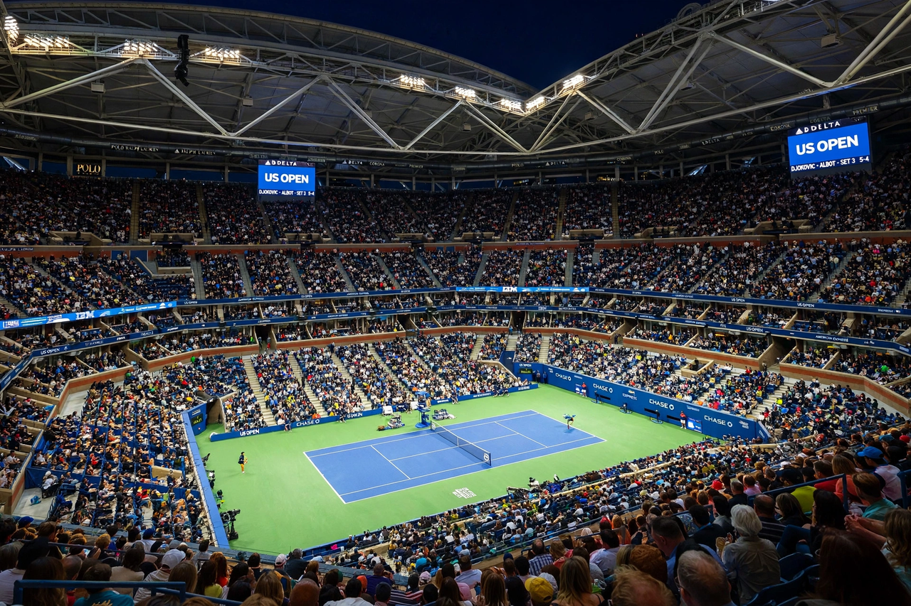

From Wikipedia, the free encyclopedia
| US Open | |
|---|---|
 Arthur Ashe Stadium at night during a US Open night session, the largest tennis stadium in the world | |
| Founded | 1881 |
| Location | USTA Billie Jean King National Tennis Center, Flushing Meadows, New York City |
| Surface | Hard (outdoor) |
| When | Late August – early September |
| Category | Grand Slam |
| Most men's titles (Open Era) | Connors, Sampras, Federer (5 each) |
The US Open is a tennis tournament held annually over two weeks in late August and early September at the USTA Billie Jean King National Tennis Center in Flushing Meadows, Queens, New York City. Founded in 1881 in Newport, Rhode Island, it is the fourth and final Grand Slam tournament of the year, following the Australian Open, the French Open and Wimbledon. Its centre court, Arthur Ashe Stadium, is the largest tennis stadium in the world, and the tournament is renowned for raucous night sessions and a festive, noisy atmosphere unlike the other majors.
The championships were played on grass at Newport and then Forest Hills before moving to Flushing Meadows in 1978, switching first to clay for three years and then to the hard courts used today. The US Open was the first major to introduce the tiebreak (1970) and the first to award equal prize money to men and women (1973), driven by Billie Jean King, after whom the venue is named. Jimmy Connors is the only player to have won the event on grass, clay and hard courts; Roger Federer won five consecutive titles from 2004 to 2008, and Serena Williams and Chris Evert share the Open Era women's record of six titles.
Carlos Alcaraz won the men's singles in 2025, his second US Open title, while Aryna Sabalenka retained the women's title that year. Novak Djokovic's 2023 triumph made him the oldest men's champion of the Open Era and took his record tally of major titles to 24.
Categories: US Open (tennis) | Tennis tournaments in the United States | Grand Slam (tennis)